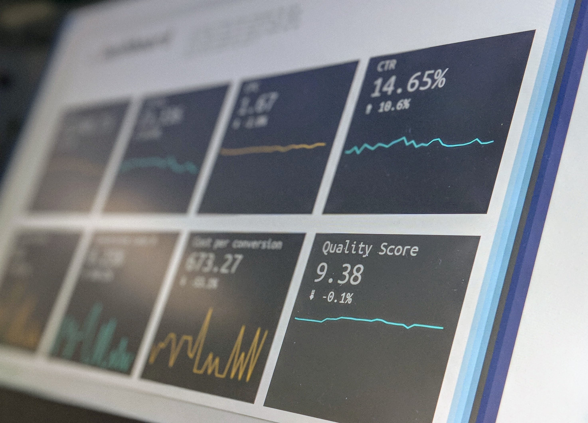
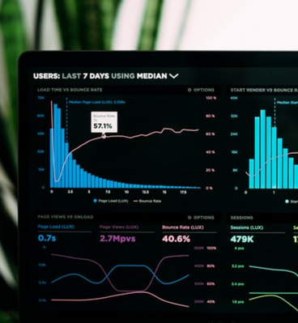

TechRAQ successfully shifts non-core activities to offshore management, bringing cost reductions and improving procedural quality.
Data Analysis, Domain-related Research, Surveys, etc.
Data Entry, Data Evaluation, Forms Processing, Order Processing.
Comprehensive customer care through voice interaction and online support.
A balanced combination of back and front office services.


Transform monoliths into agile, modular, and cloud-native architectures.
TechRAQ is an enterprise application development & implementation company with a decade-long experience that makes us a top choice for clients across the globe.
We are associated with and implemented projects for large corporations in the US, India, and Europe.
Our expertise lies in high-end Data solutions, Cloud technologies, establishing and maintaining Business processes both domestic & Offshore.
Our unique product range provides cutting-edge technology solutions to major businesses requirement who are catching up with modernization and digital transformation.
Our Technology innovation impacted many brands all over the world
Let's Talk Business